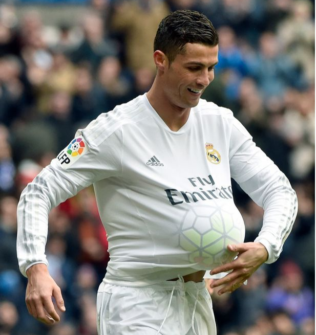

克里斯蒂亚诺·罗纳尔多个人介绍足球传奇职业数据个人集锦图片欣赏新闻动态国家队生涯登陆足球传奇 葡萄牙巨星上演帽子戏法，以一人之力连进三球，逼平强敌西班牙！3次国际足球先生、5座金球奖、6座金靴奖、5座欧冠……这便是C罗，身为一个足球运动员，C罗几乎拿遍一切能够拿的奖项，就差一个国际杯冠军。这是C罗最终一次抢夺大力神杯，为了这次角逐，他付出了太多。 看着这个一身荣誉、爱情美满的球场王者，谁能想到，他曾在贫民窟里踢野球、受尽霸凌。 1985年，C罗出生在葡萄牙乡下小城马德拉，爸爸是园丁，妈妈是清洁工。C罗家很穷，已有3个孩子的妈妈想用当地的传统方法打掉他，结果C罗硬是挺了过来。爸妈整天作业，哥哥是瘾君子，只需足球相伴的C罗天天在街头巷尾踢野球。 在这里，他爱上了踢球，自学了假动作，把握了独自解决问题的本领。充满了灵性的他10岁就进了当地的国民足球沙龙，每场竞赛都进8、9个球。 1998年，葡萄牙劲旅里斯本竞技沙龙以1500欧元的超低月薪签下了善射的C罗。 2003至2004赛季，C罗带领里斯本竞技以3:1大胜曼联，引起了曼联、尤文图斯等6、7个强队的留意。慧眼识珠的曼联教练弗格森爵士开出了最好的条件：“你现在最需求的便是有发挥自己才调的空间，来曼联，我保证你能够踢满一半以上的竞赛！” 所以，C罗就此来到了当时国际上最强的球队之一，以1224万英镑的价格成为了英格兰足球历史上身价最高的年青球员。弗格森安排C罗承继传奇球员贝克汉姆留下的7号球衣，连C罗自己都震惊了。世人不解，弗格森爵士的回答是：“他配得上7号，他的成就，不会比贝克汉姆差！” 过人凶猛，射门也在行。对阵波尔图时，C罗一脚国际波，速度高达103.32公里/小时，被英国媒体称为“火箭”，也获得了国际足联颁发的年度最佳进球奖。 下了球场，C罗每天还锻炼一小时，做300个俯卧撑。成熟的技能加上强悍的身体，让C罗成为了曼联的顶梁柱，他没有孤负弗格森的期望。效能曼联的6个赛季中，他打入118球，帮助曼联赢得了3座英超冠军和1座欧冠冠军。 2008年，他包圆了金球奖、国际足球先生、金靴奖，完成了个人荣誉的大满贯。C罗说：“弗格森就像我球场上的父亲，我向他学会了足球艺术，一同赢得了许多冠军奖杯，那段岁月如梦如幻。” 2009年，C罗收到了皇马抛来的橄榄枝，所以弗格森放手让他离队，让他以“救世主”和“解救者”的身份转会皇马。C罗在皇马的首战，就在球场里受到了80000名球迷的欢迎。在西班牙，C罗把他所学到的一切知识付诸实践，成长为一架真正的“进球机器”。在西甲，C罗是第一位做到接连五个赛季单赛季进球数都达到或超越25球的球员。 接连一百多场竞赛，只需C罗进球，皇马从没输掉过竞赛。弗格森还为C罗设定各种方针，见证他欧冠捧杯，并为他颁奖。现已成长为顶梁柱的C罗丝毫没有骄傲，不论风吹雨打，他每天都要做两百个俯卧撑、跑步五公里，练习4个小时。在接受采访时，C罗说：“许多球员在5场、10场或者15场竞赛中表现超卓，但一个赛季我必须60场竞赛超卓才行。 有研究指出，C罗能跳一米多高，弹跳力比一般的NBA篮球运动员还高。运动员的体脂率通常在10%左右，他的体脂率仅有7%；运动员肌肉含量通常很难超越46%，而C罗肌肉含量为50%。 一位形体专家解读C罗肌肉时更是说道：“从肌肉结构的角度看，人能够分为三种类型：普通人、运动员、C罗。” 自己练习还不算完，C罗还直接把客厅改造成了健身房，带动家人一同健身。即使是拿到欧冠冠军的当晚，C罗也没有和队友一样庆祝。深夜回到家，他跟女友乔治娜一同健身，持续完成自己的健身日课，备战国际杯。 天赋、努力、家人支持，这构成了C罗的全部。可C罗毕竟也超越30多岁，有人担心他还能踢多久。在对阵主场的尤文图斯时，C罗一记倒挂金钩破门，告诉了那些人：“你们想太多了，我还能踢到40岁！” 对手的球迷也用掌声向C罗表明尊重，齐达内更是在场边疯狂。西班牙《马卡报》甚至打出了“C罗赢得了天空”的大标题，表达了对他的认可。那一晚，C罗在ins上发了一句话：“努力终有报答” 。 的确如此，还会有谁能质疑他呢？正如C罗的恩师弗格森爵士所说的那样：“成功可不是靠侥幸，罗纳尔多之所以有今天，便是靠不断地练习。”现在，汗水现已足够，是时分浇灌出胜利果实了。 让我们祝愿C罗在接下来的竞赛中，连战告捷，得偿所愿！ |
||||
|